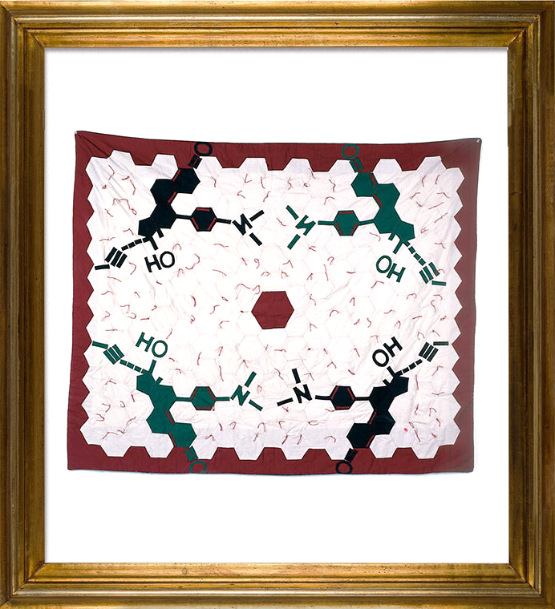
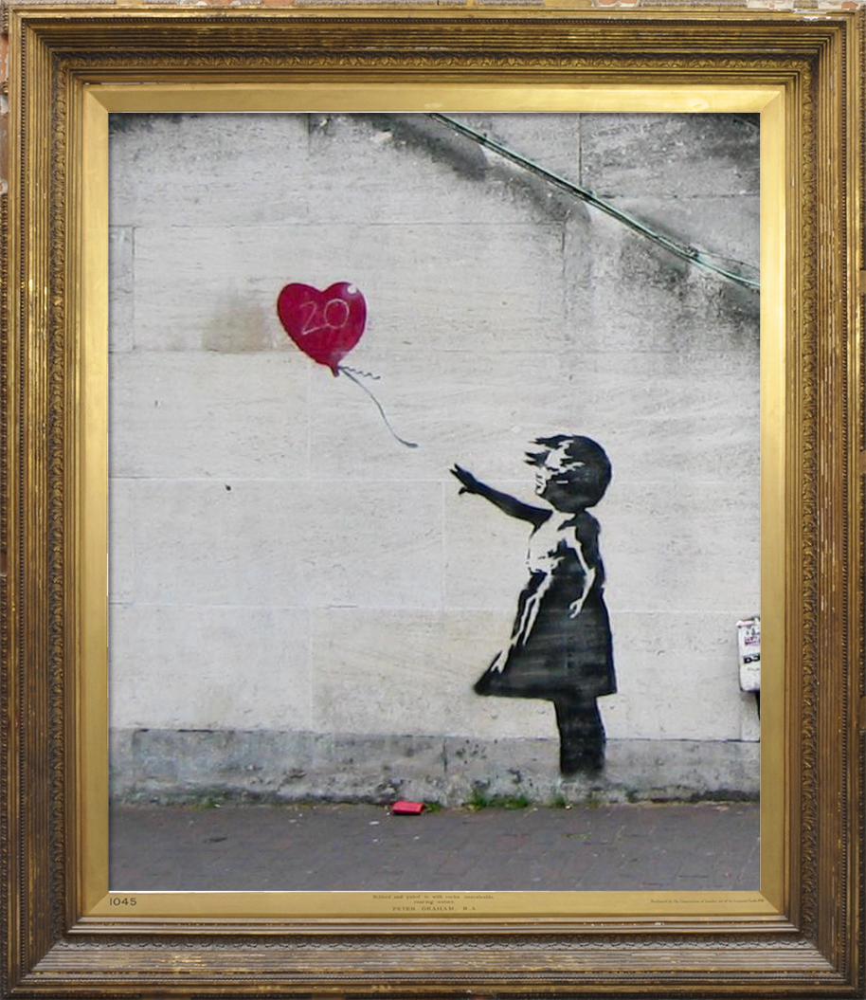
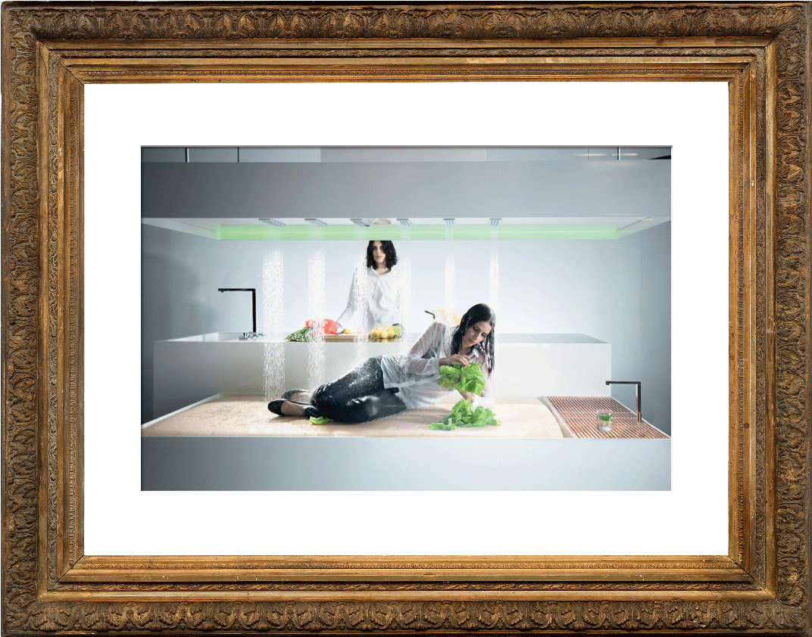
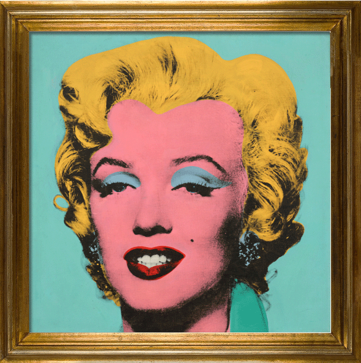
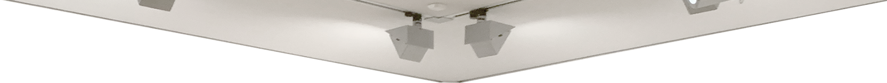

Digital Provenance and the Artwork as Derivative
McKenzie Wark
November 2016
Unlike Hito Steyerl, I don’t think art is a currency. I think it’s a derivative, which is not quite the same thing as a currency. A currency can store value or act as a means of exchange. A derivative does something different. It manages and hedges risk. What we need, then, is a theory of art as a derivative.
Let’s start with this paradox. Art is about rarity, about things that are unique and special and cannot be duplicated. And yet the technologies of our time are all about duplication, copies, about information that is not really special at all. At first, it might appear that the traditional form of art is obsolete. If it has value, it is as something from a past way of life, before information technology took over. But actually, what appears to be happening is stranger than that. Let’s look at some of the special ways in which art as rarity interacts now in novel ways with information as plenty, producing some rather striking opportunities to create value.
Some time in the mid-Nineties, the artist Mel Chin was watching television. He saw the actress Heather Locklear on the screen, but what the artist saw was not the actress, he saw the space in which she appeared. So he contacted Deborah Siegel, the set decorator for the show and proposed that the set should include work by artists. They took this idea to the producers, who approved.
So Chin formed a group called the GALA Committee. GALA stood for Georgia and Los Angeles, and would involve artists and art students from both locations. The work was all made collaboratively. For two years, GALA worked with the scriptwriters and made art that appeared on the show. The show was Melrose Place, one of the most iconic soap operas of its era.
The writers eventually wrote the art into the show. The Heather Locklear character, who ran an advertising agency, signed the real Los Angeles Museum of Contemporary Art to her made-up ad agency. The GALA art was then auctioned at Sotheby’s Beverley Hills, where a real consortium of collectors from Germany bought the art. In the Sotheby’s auction catalog, there is a list in the back that details the episodes of the show in which each work appeared. What is this list about? One word for it is provenance. What makes each piece authentic is that it appeared on a set for a television show, was videotaped on that set, and those images ended up in a show that was broadcast to millions of people.
I think it’s a nice anticipation of where we ended up in the relationship of art and information. For those who have read their Walter Benjamin, it is an interesting wrinkle in the relation that is supposed to hold between the work of art and reproducibility. In Benjamin, reproducibility is supposed to undermine the aura of the work, its ritual seclusion, its provenance, and its standing as a unique piece of private property. But with the GALA work, what we have, dare I say, is a rather more dialectical relation between art and information.
It is the reproduction of the work, electronically rather than mechanically, that perversely enough makes it rare. The image of the GALA work in the TV show is what Hito Steyerl calls a poor image, a wretched image, compressed and degraded and available on the internet for anyone. But the GALA work itself is not. And its provenance comes, not from the singular place of its creation and persistence, but from the ubiquity of the image of it. It’s a kind of network or distributed provenance, perhaps.
Far from making the work of art obsolete, the reproducible image gives it a new kind of value. It is not quite the case that the original and the copy become indistinguishable. But it is the case that their relationship can be reversible. The copy can precede the original. You see a reproduction of something and that makes you want to go see the thing of which it is the copy. But the thing to pay attention to is that the copy creates the provenance of the original, not the other way around. The copy not only precedes but authenticates the original.
The copy can create value for the work, or in some cases for the artist rather than the work. This would be the Banksy story. The thing about Banksy that matters the most is the copies of the pieces that circulate on the internet. That is what establishes their provenance. These appear to be works made illegally in public, but that in itself is not all that interesting or important. There’s lots of street art. It is just that this street art is authenticated by the circulation of its images. Those poor images are what create value, in this case for a visibly invisible artist.
A visibly invisible artist is something of a provenance anomaly, the scene of a crime. While there has been speculation for some years now that Banksy is “actually” a man named Robin Gunningham, the Daily Mail brought forensic methods from criminal investigation to bear on the question, trying to correlate known Banksy works in London with places Gunningham is known to frequent. It is an example maybe of counter-provenance, of layering a potentially criminal authentication over an art world one.
Sometimes the preceding image that authenticates the work is not of the work but still precedes it. As an example, I’d like to look at The Island (Ken) by the group that calls itself DIS. This was at the New Museum. I did a little talk-performance with this piece, and in the process of writing it I did a studio visit and talked to the artists. They told me that the process that resulted in this work started with an idea about high-end kitchens and bathrooms. Googling that generated a series of advertisements based on the search terms, for companies offering such high-end appliances. So DIS simply chose the most high-end-seeming companies and approached them about making the pieces. So in this case, the provenance of the work comes from a Google search.
This is what the Google algorithm, customizing itself for this particular computer used by DIS, thinks is the real thing when it comes to fancy appliances. Yet, when I searched for “high-end shower” I got slightly different results, tailored algorithmically to me, or rather to my computer. The signature is in this case the algorithmically generated search, and can be expected to differ in some way in each instance. Here we have a difference from the GALA work, which depends on the uniformity of the broadcast model of simulation.
The artwork is now a derivative of its simulation. Of course there are many different kinds of simulations. It could be the JPEG of a particular work sent by a dealer to a collector, attached to a text message. The collector reads the text, looks at the JPEG, makes a decision about the artwork. But actually, the artwork is a derivative. It was the JPEG that mattered, as it is the JPEG on which the transaction depends. The collector might decide to buy or not buy the work, to reserve it, to see it later in person, and so on. As in other fields, the main thing traded here is the derivatives. The simulations are not worth much at all, or are such poor images that they might as well be free gifts.
Not just individual artworks, but art itself is now a derivative of its simulation. A key to this development is the rise of art fairs and biennials. The art fairs are more directly about selling artwork derivatives of their simulated images. They are mostly about the commercial dealers who trade in the derivative contracts that are artworks themselves. But the other side of this is the biennial, whose function is to simulate contemporary art itself.
The artwork is a derivative of its simulation, or rather of its simulations, plural. This is the way the actual, particular artwork can still work as a sort of hedge. An artwork is a risky proposition. It might in the long run turn out to be worth no more than any random bit of painted canvas. But if the artwork can be a portfolio of different kinds of simulation of itself, it is possible to manage the risk.
An artwork can be a derivative of the simulation of itself, where its image precedes it and authenticates it through its circulation and exposure. Here GALA is the example. An artwork can be a derivative of the simulation of its artist. Here Banksy is a slightly aberrant example, where its the simulation of the artist’s absence that creates provenance. An artwork can also claim provenance from celebrity. This is one of the things going on in the commerce between the art world, fashion, and pop music. Those mass simulation forms think they gain something from the provenance of the artwork as a rare and singular commodity, and maybe they do. But I think really the secret is that it is the artwork that acquires its provenance from proximity to Jay Z or Kanye or Björk. The artwork becomes a derivative of contact with the body behind the simulation of the pop star or fashion star.
Artworks in our time are derivatives because that is how our economy works. In a previous era, one which prized manufacturing, artworks were distinguished by their manufacturing techniques. So, for example, works by Impressionists, Surrealists, or so-called Action Painters could be treated as special, non-alienating commodities made by some other manufacturing process besides the workshop or the assembly line.
This started to change in the Sixties. Through Edie Sedgwick, Warhol discovered both how simulation could create provenance and how the artwork could be the derivative that would be a portfolio of simulation values. But it was perhaps minimalism’s “dematerialization of the artwork” that really put an end to the industrial model of art and paved the way for the birth of the financial model of art, of the artwork as a derivative that functions as a portfolio of simulation values. The artwork, like any other financial instrument, needs nothing to exist beyond its documentation.
So in short, I think what is most interesting about the relation between art and information is the reciprocal relation between art as rarity and information as ubiquity. It turns out that ubiquity can be a kind of distributed provenance, of which the artwork itself is the derivative. The artwork is then ideally a portfolio of different kinds of simulated value, the mixture of which can be a long-term hedge against the risks of various kinds of simulated value falling—such as the revealing of the name of a hidden artist, or the decline of the intellectual discourse on which the work depended, or the artist falling into banality and overproduction.
Since art became a special kind of financial instrument rather than a special kind of manufactured article, it no longer needs to have a special means for its making, or even perhaps special makers. Indeed, curators now rival artists for influence the way DJs rival musicians. Both are a kind of portfolio manager of the qualitative. The next step after the dematerialization of the artwork may be the dematerialization of the art worker, whose place could be taken by new kinds of algorithmic functions. These would still have to produce the range of simulations that might anchor the artwork as a derivative of their various kinds of sign value.
Let’s start with this paradox. Art is about rarity, about things that are unique and special and cannot be duplicated. And yet the technologies of our time are all about duplication, copies, about information that is not really special at all. At first, it might appear that the traditional form of art is obsolete. If it has value, it is as something from a past way of life, before information technology took over. But actually, what appears to be happening is stranger than that. Let’s look at some of the special ways in which art as rarity interacts now in novel ways with information as plenty, producing some rather striking opportunities to create value.
Some time in the mid-Nineties, the artist Mel Chin was watching television. He saw the actress Heather Locklear on the screen, but what the artist saw was not the actress, he saw the space in which she appeared. So he contacted Deborah Siegel, the set decorator for the show and proposed that the set should include work by artists. They took this idea to the producers, who approved.
So Chin formed a group called the GALA Committee. GALA stood for Georgia and Los Angeles, and would involve artists and art students from both locations. The work was all made collaboratively. For two years, GALA worked with the scriptwriters and made art that appeared on the show. The show was Melrose Place, one of the most iconic soap operas of its era.
The writers eventually wrote the art into the show. The Heather Locklear character, who ran an advertising agency, signed the real Los Angeles Museum of Contemporary Art to her made-up ad agency. The GALA art was then auctioned at Sotheby’s Beverley Hills, where a real consortium of collectors from Germany bought the art. In the Sotheby’s auction catalog, there is a list in the back that details the episodes of the show in which each work appeared. What is this list about? One word for it is provenance. What makes each piece authentic is that it appeared on a set for a television show, was videotaped on that set, and those images ended up in a show that was broadcast to millions of people.
I think it’s a nice anticipation of where we ended up in the relationship of art and information. For those who have read their Walter Benjamin, it is an interesting wrinkle in the relation that is supposed to hold between the work of art and reproducibility. In Benjamin, reproducibility is supposed to undermine the aura of the work, its ritual seclusion, its provenance, and its standing as a unique piece of private property. But with the GALA work, what we have, dare I say, is a rather more dialectical relation between art and information.
It is the reproduction of the work, electronically rather than mechanically, that perversely enough makes it rare. The image of the GALA work in the TV show is what Hito Steyerl calls a poor image, a wretched image, compressed and degraded and available on the internet for anyone. But the GALA work itself is not. And its provenance comes, not from the singular place of its creation and persistence, but from the ubiquity of the image of it. It’s a kind of network or distributed provenance, perhaps.
Far from making the work of art obsolete, the reproducible image gives it a new kind of value. It is not quite the case that the original and the copy become indistinguishable. But it is the case that their relationship can be reversible. The copy can precede the original. You see a reproduction of something and that makes you want to go see the thing of which it is the copy. But the thing to pay attention to is that the copy creates the provenance of the original, not the other way around. The copy not only precedes but authenticates the original.
The copy can create value for the work, or in some cases for the artist rather than the work. This would be the Banksy story. The thing about Banksy that matters the most is the copies of the pieces that circulate on the internet. That is what establishes their provenance. These appear to be works made illegally in public, but that in itself is not all that interesting or important. There’s lots of street art. It is just that this street art is authenticated by the circulation of its images. Those poor images are what create value, in this case for a visibly invisible artist.
A visibly invisible artist is something of a provenance anomaly, the scene of a crime. While there has been speculation for some years now that Banksy is “actually” a man named Robin Gunningham, the Daily Mail brought forensic methods from criminal investigation to bear on the question, trying to correlate known Banksy works in London with places Gunningham is known to frequent. It is an example maybe of counter-provenance, of layering a potentially criminal authentication over an art world one.
Sometimes the preceding image that authenticates the work is not of the work but still precedes it. As an example, I’d like to look at The Island (Ken) by the group that calls itself DIS. This was at the New Museum. I did a little talk-performance with this piece, and in the process of writing it I did a studio visit and talked to the artists. They told me that the process that resulted in this work started with an idea about high-end kitchens and bathrooms. Googling that generated a series of advertisements based on the search terms, for companies offering such high-end appliances. So DIS simply chose the most high-end-seeming companies and approached them about making the pieces. So in this case, the provenance of the work comes from a Google search.
This is what the Google algorithm, customizing itself for this particular computer used by DIS, thinks is the real thing when it comes to fancy appliances. Yet, when I searched for “high-end shower” I got slightly different results, tailored algorithmically to me, or rather to my computer. The signature is in this case the algorithmically generated search, and can be expected to differ in some way in each instance. Here we have a difference from the GALA work, which depends on the uniformity of the broadcast model of simulation.
The artwork is now a derivative of its simulation. Of course there are many different kinds of simulations. It could be the JPEG of a particular work sent by a dealer to a collector, attached to a text message. The collector reads the text, looks at the JPEG, makes a decision about the artwork. But actually, the artwork is a derivative. It was the JPEG that mattered, as it is the JPEG on which the transaction depends. The collector might decide to buy or not buy the work, to reserve it, to see it later in person, and so on. As in other fields, the main thing traded here is the derivatives. The simulations are not worth much at all, or are such poor images that they might as well be free gifts.
Not just individual artworks, but art itself is now a derivative of its simulation. A key to this development is the rise of art fairs and biennials. The art fairs are more directly about selling artwork derivatives of their simulated images. They are mostly about the commercial dealers who trade in the derivative contracts that are artworks themselves. But the other side of this is the biennial, whose function is to simulate contemporary art itself.
The artwork is a derivative of its simulation, or rather of its simulations, plural. This is the way the actual, particular artwork can still work as a sort of hedge. An artwork is a risky proposition. It might in the long run turn out to be worth no more than any random bit of painted canvas. But if the artwork can be a portfolio of different kinds of simulation of itself, it is possible to manage the risk.
An artwork can be a derivative of the simulation of itself, where its image precedes it and authenticates it through its circulation and exposure. Here GALA is the example. An artwork can be a derivative of the simulation of its artist. Here Banksy is a slightly aberrant example, where its the simulation of the artist’s absence that creates provenance. An artwork can also claim provenance from celebrity. This is one of the things going on in the commerce between the art world, fashion, and pop music. Those mass simulation forms think they gain something from the provenance of the artwork as a rare and singular commodity, and maybe they do. But I think really the secret is that it is the artwork that acquires its provenance from proximity to Jay Z or Kanye or Björk. The artwork becomes a derivative of contact with the body behind the simulation of the pop star or fashion star.
Artworks in our time are derivatives because that is how our economy works. In a previous era, one which prized manufacturing, artworks were distinguished by their manufacturing techniques. So, for example, works by Impressionists, Surrealists, or so-called Action Painters could be treated as special, non-alienating commodities made by some other manufacturing process besides the workshop or the assembly line.
This started to change in the Sixties. Through Edie Sedgwick, Warhol discovered both how simulation could create provenance and how the artwork could be the derivative that would be a portfolio of simulation values. But it was perhaps minimalism’s “dematerialization of the artwork” that really put an end to the industrial model of art and paved the way for the birth of the financial model of art, of the artwork as a derivative that functions as a portfolio of simulation values. The artwork, like any other financial instrument, needs nothing to exist beyond its documentation.
So in short, I think what is most interesting about the relation between art and information is the reciprocal relation between art as rarity and information as ubiquity. It turns out that ubiquity can be a kind of distributed provenance, of which the artwork itself is the derivative. The artwork is then ideally a portfolio of different kinds of simulated value, the mixture of which can be a long-term hedge against the risks of various kinds of simulated value falling—such as the revealing of the name of a hidden artist, or the decline of the intellectual discourse on which the work depended, or the artist falling into banality and overproduction.
Since art became a special kind of financial instrument rather than a special kind of manufactured article, it no longer needs to have a special means for its making, or even perhaps special makers. Indeed, curators now rival artists for influence the way DJs rival musicians. Both are a kind of portfolio manager of the qualitative. The next step after the dematerialization of the artwork may be the dematerialization of the art worker, whose place could be taken by new kinds of algorithmic functions. These would still have to produce the range of simulations that might anchor the artwork as a derivative of their various kinds of sign value.

Quilt made by the GALA collective and featured as a prop in the tv soap opera Melrose Place.

Banksy's graffiti work.

DIS's The Island (Ken), 2015.

Andy Warhol's Shot Marilyns, 1964.
